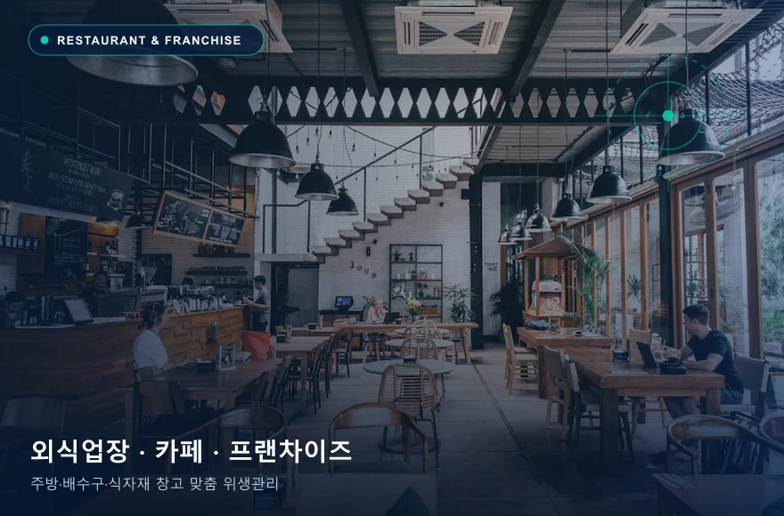
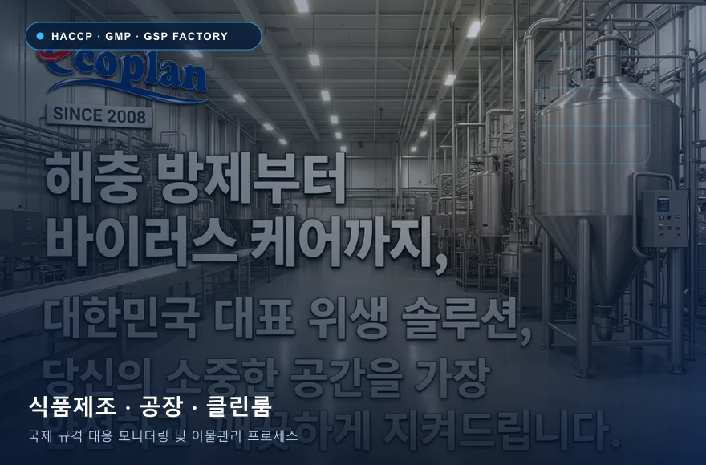
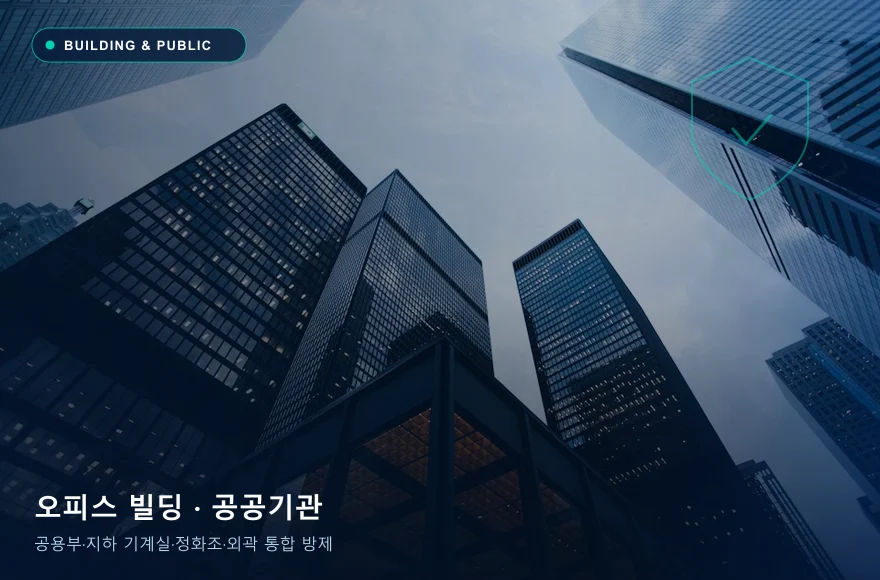
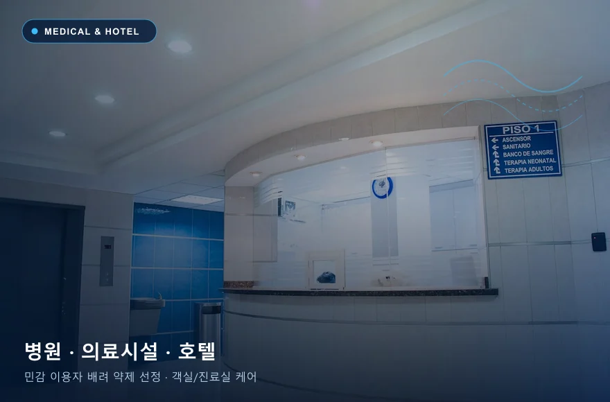
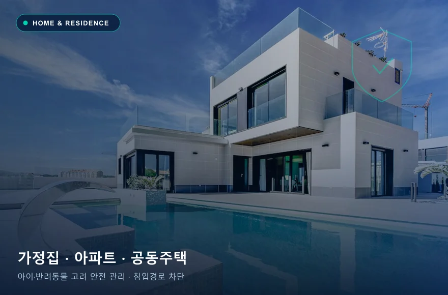
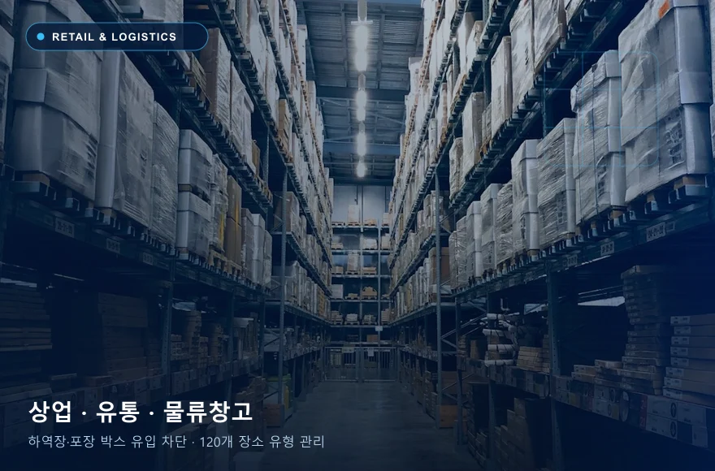

음식점·카페 해충관리
주방 화구·냉장고 열원, 배수 트렌치·그리스트랩, 음료 디스펜서, 식자재 창고를 함께 점검합니다. 영업시간과 조리 도구·식품 노출 여부를 고려해 독먹이·유충구제·포충기 위치를 계획합니다.
주방 조리실 / 그리스트랩·배수구 / 홀·음료대 / 식자재 창고
음식점·카페 중점 관리 대상 및 취약 포인트
- 독일바퀴·미국바퀴 (조리기기 모터·싱크대 하부·택배 박스)
- 나방파리·초파리 (배수구 슬러지·음료 시럽·음식물 쓰레기통)
- 쥐 (외부 하역 통로·출입문 하단·창고 적치물)

식품·제조시설 해충관리
HACCP·GMP·GSP 등 시설별 위생 관리 요구사항을 확인하고, 외곽 방서 디펜스라인·실내 트랩 모니터링·포충기 포획 추이 분석보고·위생점검 및 이물혼입 분석(카탈라제 효소·제3자 기관 의뢰 협의)을 연결합니다.
생산·포장구역 / 원료·완제품 창고 / 하역장·전실 / 외곽 경계선
식품·제조시설 중점 관리 대상 및 취약 포인트
- 비래해충·파리류 (하역장 개방 도어·전실 양압 및 포충기 동선 관리)
- 설치류·보행해충 (외곽 디펜스라인 약제상자 및 실내 점착·기계식 트랩)
- 저곡해충·이물관리 (원료 입고 검수·페로몬 모니터링·해충 동정 보고서)

빌딩·공공기관 해충관리
로비·사무실 등 지상 공용부와 지하 정화조·집수정·기계실·배관 샤프트를 연결해 건물 단위의 유입·번식 원인을 진단합니다. 법정 소독 기준과 다중이용 공간 일정을 반영해 작업을 설계합니다.
지하 정화조·집수정 / 기계실·전기실 / 공용 화장실·탕비실 / 로비·출입구
빌딩·공공기관 중점 관리 대상 및 취약 포인트
- 지하모기·나방파리 (정화조·집수정 연중 유충구제 및 환풍구·배관 차단)
- 미국바퀴·쥐 (지하 공동구·배관 관통부·외부 화단 유입 차단)
- 다중이용 살균소독 (승강기·손잡이·화장실 등 환경부 허가 3계열 살균제 적용)

병원·호텔 해충관리
환자·투숙객 등 민감한 이용자 특성과 24시간 운영 동선을 최우선으로 고려합니다. 객실·병실·린넨실·식음료 구역별로 약제 노출을 최소화하는 정밀 처리와 비노출 모니터링을 협의합니다.
객실·병실 / 린넨·세탁물 보관실 / 원내 식당·조리실 / 공용 로비·화장실
병원·호텔 중점 관리 대상 및 취약 포인트
- 보행해충·미세해충 (객실 가구 틈새·린넨 카트·배관 경유 유입 점검)
- 비래해충 (출입구·식음료 구역 포충기 설계 및 배수 설비 유충 관리)
- 작업 안전 관리 (구역별 부분 통제·저자극 제형 선정·환기 및 재입실 기준 안내)

주택·공동주택 해충관리
싱크대 하부·배수구·욕실 환풍구·발코니 우수관·창틀 물구멍 등 세대 내부 서식처와 외부 유입 틈새를 정밀 점검합니다. 영유아·반려동물·알레르기 민감 가족 유무에 맞춰 약제 위치와 주의사항을 상세히 안내합니다.
주방 싱크대·가전 뒤편 / 욕실 배수구·환풍구 / 발코니·우수관 / 현관·창틀
주택·공동주택 중점 관리 대상 및 취약 포인트
- 독일바퀴·개미 (싱크대 경첩·냉장고 뒤편·택배 박스 유입 및 독먹이 안전 배치)
- 나방파리·초파리·모기 (욕실 배수구 슬러지·창틀 물구멍·화분 물고임 점검)
- 먼지다듬이·지네 (신축·고습도 벽지/가구 결로 관리 및 1층·전원주택 외벽 침입 차단)

상업·유통시설 해충관리
대형 매장, 물류창고, 마트·백화점의 잦은 물품 입출고와 고객 출입 동선을 함께 점검합니다. 팔레트·골판지 박스를 통한 해충 유입과 건조 식품·사료 코너의 저곡해충 발생을 예방합니다.
입출고 하역장 / 보관 창고·팔레트 / 식품·푸드코트 매대 / 폐기물 집하장
상업·유통시설 중점 관리 대상 및 취약 포인트
- 쥐·바퀴벌레 (하역장 도어 하단 차단 및 입고 박스·팔레트 검수 구역 모니터링)
- 저곡해충 (곡물·사료·가공식품 보관 구역 권연벌레·화랑곡나방 트랩 점검)
- 파리류 (폐기물 집하장 이격 관리 및 매장 출입구 포충기 배치)
업종·규격·대상 해충 통합 관리 체계
에코플랜은 모든 업종의 고객 환경에 맞춰 해충별 기본전략 × 120개 세부 장소별 전략 × 업종별 프로세스를 결합합니다. HACCP·GMP·GSP 시설 관리 상담은 각 시설의 위생 관리 기준 충족을 돕기 위한 모니터링·개선 서비스이며, 인증 취득 자체를 보장하는 것은 아닙니다.
| 구분 | 세부 적용 범위 |
|---|---|
| 주요 업종 및 시설 | 빌딩, 공공기관, 병원·호텔, 상업시설, 주택·공동주택, 식품·제조시설 |
| 관리 기준 연계 | HACCP, GMP, GSP, 일반 제조시설 위생기준, 주거 생활환경 기준 |
| 세부 장소 구분 | 주방, 조리실, 창고, 하역장, 화장실, 탕비실, 객실, 기계실, 정화조 등 120개 장소 유형별 맞춤 적용 |
| 관리 대상 해충 | 바퀴벌레, 쥐, 파리, 모기, 소형파리(나방파리·초파리), 개미·저곡해충, 먼지다듬이, 진드기, 지네 등 |
방문 진단·상담 전에 준비하면 좋은 정보
- 시설 위치(시·군·구)와 대략적인 면적, 영업·운영 시간, 식품 노출 및 접근 제한 구역
- 주요 목격 해충(또는 사진)과 발견 장소·시간대, 기존 자체 처리 또는 방제 업체 이용 이력
- 영유아·반려동물·민감 이용자 유무 및 사업장 내부 위생 점검·기록 양식 필요 여부
업종·장소별 해충관리 자주 묻는 질문
에코플랜의 120개 세부 장소별 방제 전략은 어떻게 적용되나요?
같은 건물이라도 주방 조리실, 그리스트랩, 원료 창고, 하역장, 공용 화장실, 탕비실, 객실, 지하 정화조·기계실 등 세부 구역마다 온·습도와 유인 요인이 다릅니다. 에코플랜은 해충별 기본 전략에 120개 세부 장소 유형과 업종별 프로세스를 결합해 구역마다 다른 약제 제형과 트랩을 배치합니다.
외식 프랜차이즈나 식품공장의 영업·가동 시간을 피해서 작업할 수 있나요?
네, 조리·생산 라인 가동 시간과 식품 노출 여부를 사전 확인하여 영업 전후 시간대 또는 구역별 부분 통제 방식으로 일정을 협의합니다.
HACCP·GMP 제조시설 관리 시 어떤 위생 지원이 함께 제공되나요?
외곽 방서 디펜스라인 및 실내 포획·포충기 모니터링 기록, 추이 분석보고, 해충 동정(이물확인), 현장 위생점검 및 작업자 위생교육을 시설 요구사항에 맞춰 협의 제공합니다. 다만 방제 서비스 계약 자체가 HACCP·GMP 인증 취득을 보장하는 것은 아닙니다.
시설별 적용 범위와 작업 조건은 현장 확인 후 안내합니다. 서비스 내용 문의